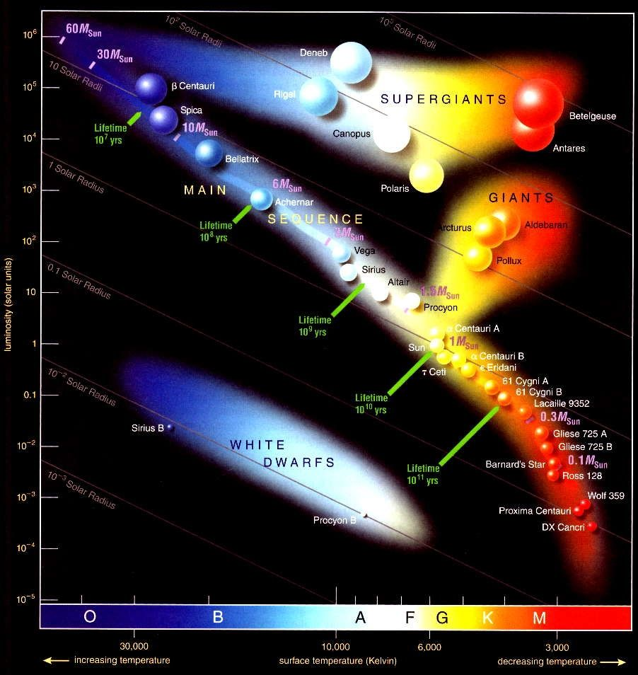

Introduction
The following project is one I’ve been wanting to explore since my junior year of high school, but was unable to delve into due to time constraints and a lack of knowledge about machine learning models. Now, however, I’ve finally had the chance to create significant visualizations and build some predictive models.
Predictive models in particular are beneficial for understanding stellar evolution and doing astrophysical research. By finding correlations between star characteristics and types, it can make it easier for scientists to gain insight into stellar life cycles, identify relationships between different stars and their environments, and classify large amounts of stars quickly instead of slowly and manually. This is especially important because of the extensive amounts of stellar data, much of which is difficult to handle without access to high-scale computational abilities.
I used a kaggle dataset of 240 star observations to create my visualizations and train my models, which turned out to be less data than was optimal. As a result, I ran into issues of overfitting in my modeling process. Unfortunately, I was unable to obtain a new dataset to work with and had to accommodate accordingly. The dataset I used is meant to prove that stars follow the Hertzsprung-Russell Diagram (HR-Diagram) pictured below so that we can classify stars by plotting its features based on the model. Here is the link to it on kaggle.
The Hertzsprung-Russell Diagram.